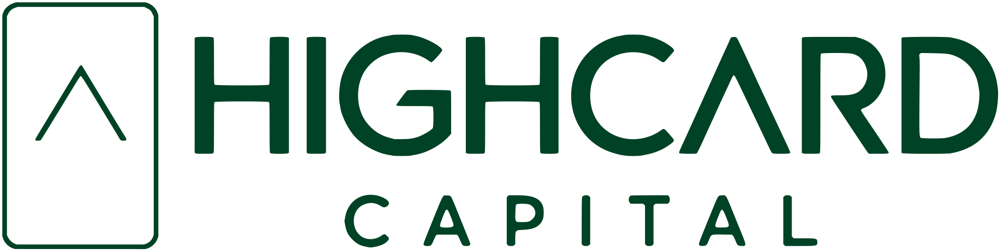
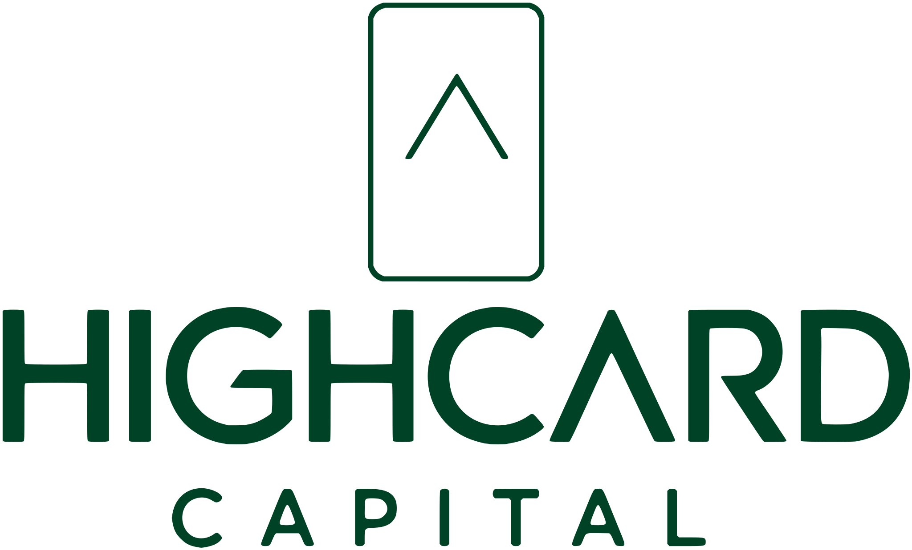
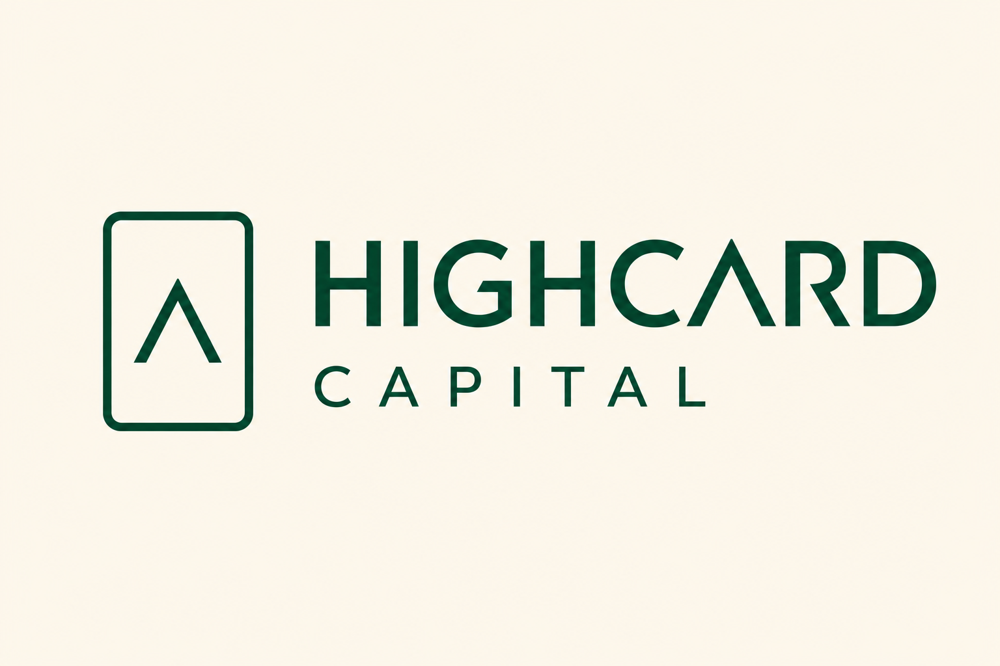
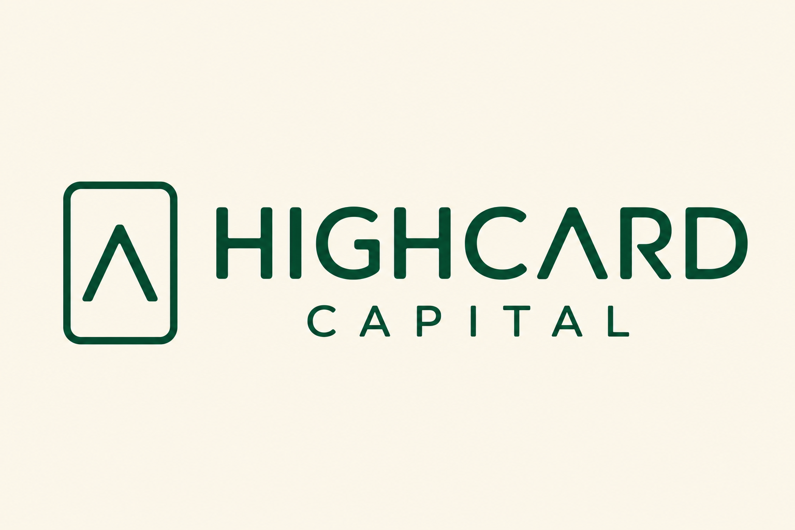
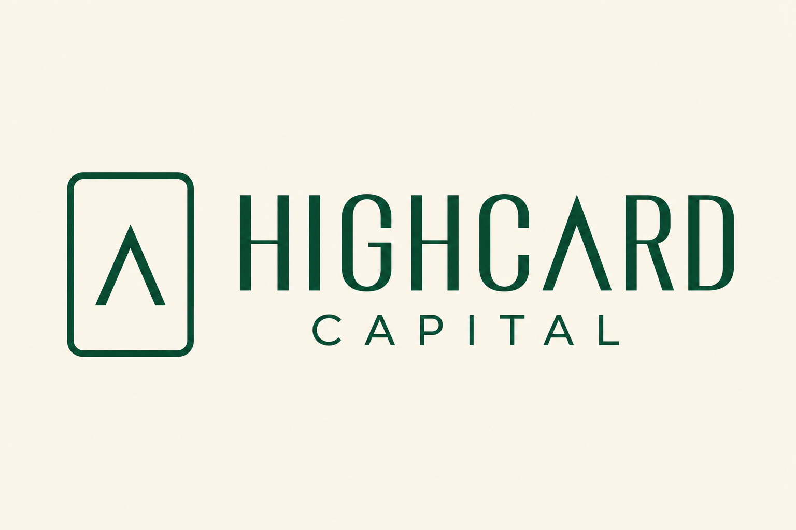
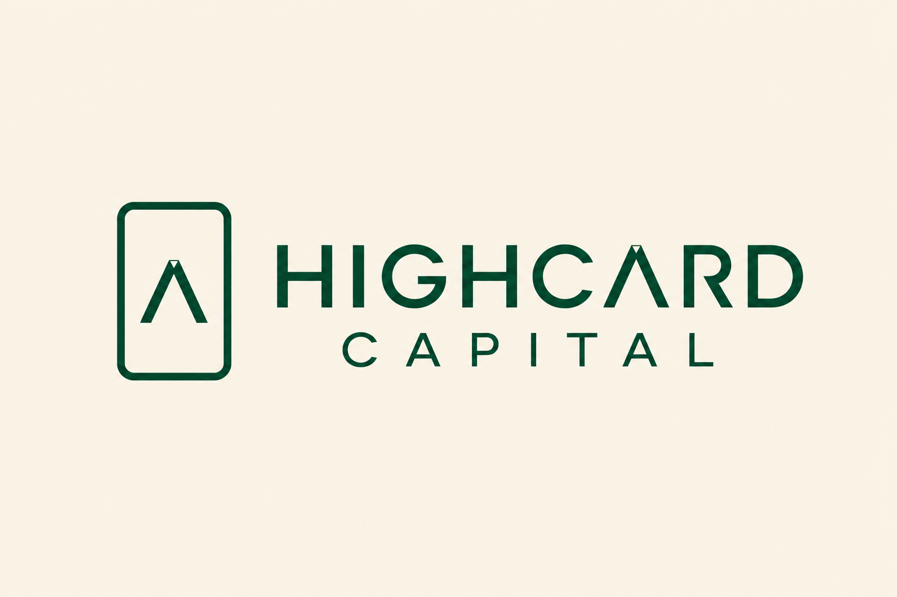

First: the corrected base logo — peak-A in HIGHCARD matching the icon, regular A's in CAPITAL, and the whole wordmark one weight lighter. Below it: four customization directions generated with gpt-image-2. Pick one (or combine two) and I'll carve it into the production vectors.




The open ends of C, G, S, R get a subtle angled cut — the classic "custom foundry" move. Quiet at a glance, unmistakably bespoke up close.

Letterform corners softly rounded to echo the card icon's rounded frame — the type inherits the icon's geometry.

Slightly narrower letters with raised crossbars — changes the proportions themselves, the most "designed" and editorial option.

Tiny ink-trap notches cut where strokes meet — invisible at distance, a signature detail at scale. Very modern type-foundry.